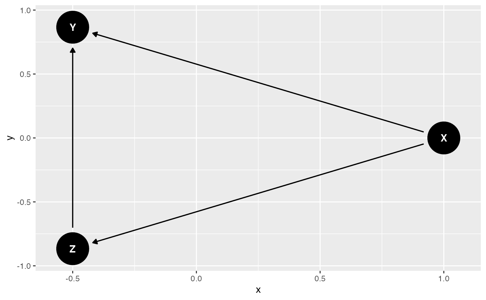

Causal Discovery with DAGitty and Simulated Data
causal-discovery.Rmdüß≠ Causal Discovery: Learning Structure from Data
Causal discovery aims to infer the causal structure (i.e. DAG) from observational data. This is useful when domain knowledge is limited or exploratory analysis is needed.
1. ✨ Simulate Data with Known DAG
set.seed(123)
n <- 1000
X <- rnorm(n)
Z <- 0.6 * X + rnorm(n)
Y <- 0.5 * Z + 0.3 * X + rnorm(n)
df <- data.frame(X, Z, Y)
head(df)## X Z Y
## 1 -0.56047565 -1.3320841 -1.3457885
## 2 -0.23017749 -1.1780615 -0.4211461
## 3 1.55870831 0.9172447 0.3846457
## 4 0.07050839 -0.0898701 1.1954451
## 5 0.12928774 -2.4717701 -1.0229629
## 6 1.71506499 2.0696124 0.93405742. ü߆ Define the True DAG
true_dag <- dagitty("dag {
X -> Z -> Y
X -> Y
}")
ggdag(true_dag, layout = "circle") +
ggtitle("True DAG Used to Generate Data")
3. üîç Use localTests() to Test Dependencies
We use dagitty::localTests() to test conditional
independence statements implied by a candidate DAG:
test_result <- localTests(true_dag, data = df, type = "cis")
test_result## data frame with 0 columns and 0 rowsEach row checks whether a conditional independence assumption holds (p > 0.05 supports the claim).
4. üß™ Try an Incorrect DAG
wrong_dag <- dagitty("dag {
Z -> X
Z -> Y
X -> Y
}")
ggdag(wrong_dag, layout = "circle") +
ggtitle("Incorrect DAG Assumption")
Now test:
localTests(wrong_dag, data = df, type = "cis")## data frame with 0 columns and 0 rowsLook for failed assumptions (very low p-values).
ü߆ Assumptions for Causal Discovery
- Causal Sufficiency: All common causes are measured
- Faithfulness: Statistical independence reflects causal structure
- No Measurement Error